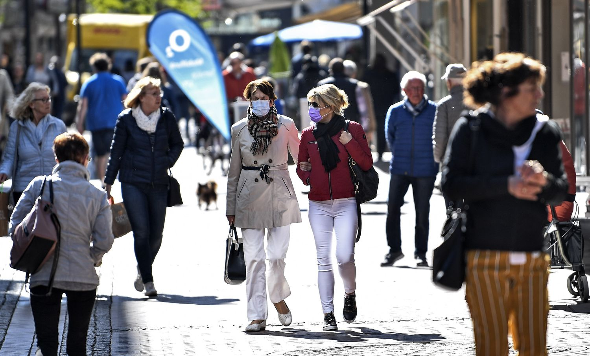

AO VIVO | Últimas notícias sobre o coronavírus no Brasil e no mundo
|  | Brasil registra mais 113 mortes por covid-19 em 24 horas, e óbitos por covid-19 chegam a 2.575. PGR pede que STF investigue atos pró-intervenção militar, e Bolsonaro nega que seja a favor do fechamento do Congresso. Siga ao vivo as últimas notícias |
Pessoas caminham em Gelsenkirchen, na Alemanha, enquanto comércio menores começaram a reabrir nesta segunda no país.MARTIN MEISSNER / AP
Os 10 sintomas raros ou pouco conhecidos causados pelo novo coronavírus
 |
A covid-19 é nova e ainda se sabe pouco sobre ela. Mas pesquisas e institutos médicos apontam os principais sintomas mais e menos frequentes da doença |
Coronavírus: vírus causador da covid-19 pode gerar vários sintomas (dowell/Getty Images)
Como se previnir contra o corona vírus
| No vídeo ao lado temos os cuidados e as prevenções contra o covid 19, lembrando sempre de lavar as mãos e evitar contatos aos olhos e bocas, como estão vendo no video todos os protocolos a serem seguidos com todas as tecnicas seguras para evitar a contaminação do covid 19,com todas as precauções a serem seguidas evitaremos o contagio. |